S10 · Level 3 — Tim virtual
Latih alur CodeQL Autofix
Baca warning nyata di draft, uji perbaikan format, lalu cocokkan status alert dan angka scan pada ref yang sama. Copilot Autofix dan perbaikan biasa adalah dua jalur berbeda.
Status latihan: CodeQL: 1 → 0 alert pada ref PR #1 · Fixed in branch lewat perbaikan biasa, bukan Autofix. Ikuti langkah · Cek hasil · Langkah live · Ulangi dari awal.
Masalah yang dihadapi
Daftar alert yang panjang tidak memberi Bima informasi cukup untuk meninjau perbaikan.
Kerugian: Temuan audit berulang jika perbaikan tidak dibuktikan.
Masalah pada baseline
src/db.js
Lihat potongan atau catatan sumber
WHERE c.claim_date BETWEEN ? AND ? AND c.status = 'approved'Solusi dan alur
Baca warning nyata di draft, uji perbaikan format, lalu cocokkan status alert dan angka scan pada ref yang sama. Copilot Autofix dan perbaikan biasa adalah dua jalur berbeda.
Alur kerja ringkas
CodeQL · Pindai source
Hasil: Pemindaian utama menunjukkan 0 open; scan draft #1 selesai dan Code scanning menemukan satu warning format tabel.
AppSec · Tentukan apakah ada temuan yang bisa ditangani
Hasil: Tinjau warning yang ada, tanpa menanam celah. Coba API Autofix resmi; jika tidak ada saran, buat draft perbaikan biasa.
Reviewer · Cek ulang bila ada perbaikan nyata
Hasil: CodeQL menandai Fixed in branch, dan jumlah alert open di ref PR yang sama turun 1 menjadi 0. Tidak ada merge.

- Baca alert bila scanner menemukannya.
- Minta usulan mitigasi tanpa menanam celah.
- Tinjau perubahan defensif dalam draft PR.
- Jalankan scan ulang dan lihat hasilnya.
Lihat sumber Mermaid
sequenceDiagram
actor D as Dimas
participant Q as CodeQL
participant A as Agent
participant P as Draft PR
Q-->>D: Sajikan alert bila ditemukan
D->>A: Delegasikan mitigasi
A->>P: Ajukan perubahan defensif
P->>Q: Jalankan scan ulang
Q-->>D: Laporkan hasil untuk review
Note over D,P: Ilustrasi, bukan hasil scan workshopLangkah demo
Baca mitigasi yang sudah ada
Di src/db.js cari BETWEEN ? AND ?. Periode harus jadi parameter, bukan dirakit menjadi teks SQL. Buka src/routes/reports.js dan cari pemeriksaan peran Finance serta validasi month.
git grep -n "BETWEEN ? AND ?" -- src/db.js Perbesar S10-local-result.png
Perbesar S10-local-result.pngOutput lokal yang dirender · bukan layar portal · Output pemeriksaan lokal S10: Query laporan memakai parameter; Akses dan validasi lokal. Uji batas API secara defensif
Mulai npm run demo:before di terminal pertama. Jalankan blok ini di terminal PowerShell kedua untuk membandingkan Finance, Manager, dan bulan tidak valid. Pemilih peran hanya untuk aplikasi fiktif di localhost.
curl.exe -sS -o NUL -w "Finance 2026-09: %{http_code}\n" -H 'x-demo-user: 6' 'http://127.0.0.1:3000/reports?month=2026-09' curl.exe -sS -o NUL -w "Manager 2026-09: %{http_code}\n" -H 'x-demo-user: 4' 'http://127.0.0.1:3000/reports?month=2026-09' curl.exe -sS -w "\nFinance 2026-13: %{http_code}\n" -H 'x-demo-user: 6' 'http://127.0.0.1:3000/reports?month=2026-13'Baca CodeQL bila sudah diaktifkan
GitHub → Security → Code scanning. Jika ada temuan nyata, buka alert, lihat usulan perbaikan, tinjau file, jalankan scan ulang. Jika belum ada hasil, jangan isi angka sebelum/sesudah atau membuat celah untuk demo.
docs/simulations.md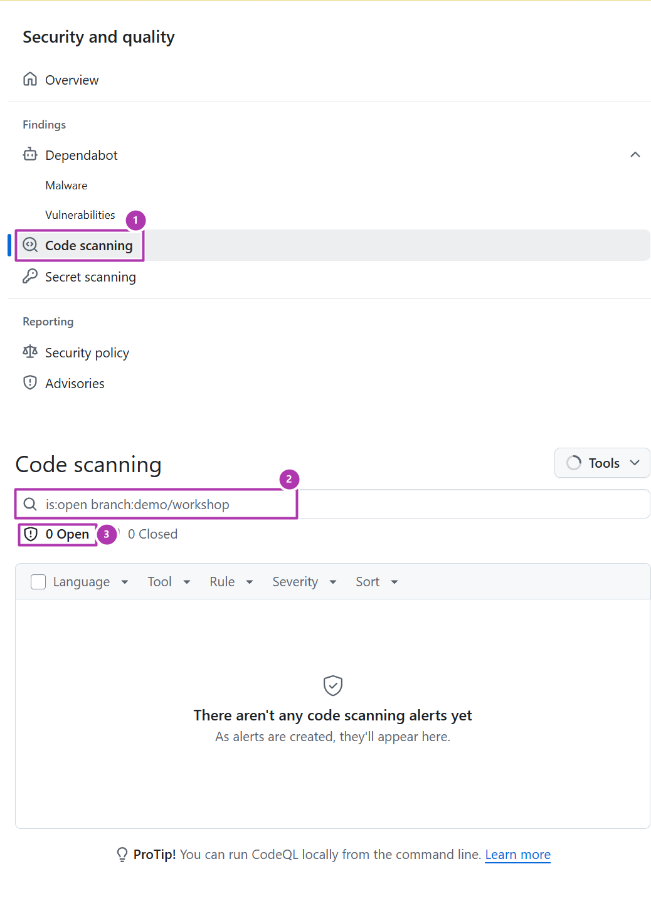
Perbesar S10-before-annotated.pngSumber GitHub · 1. Di Security and quality, pilih Code scanning. · 2. Baca filter is:open branch:demo/workshop. · 3. Hasilnya 0 Open, jadi tidak ada alert untuk Autofix. Jangan membuat temuan palsu. Bedakan scan selesai dari jumlah alert
Pada draft modul #1, CodeQL menyelesaikan analisis Actions dan JavaScript/TypeScript. Itu tidak menyatakan tidak ada temuan. Branch demo/workshop tetap 0 open, sedangkan PR punya satu warning nyata.
https://github.com/sandy-demo/AgenticSDLC/actions/runs/45705199014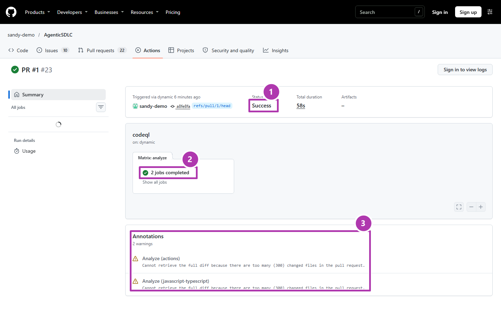
Perbesar S10-reference-draft-codeql-annotated.pngSumber GitHub · 1. Success menunjukkan scanner selesai, bukan berarti tidak ada alert. · 2. Dua job analisis selesai. · 3. Annotations mencatat batas diff pada PR besar; alert yang terukur dibaca terpisah di Code scanning. Tinjau warning yang benar-benar ditemukan
Di Security and quality, buka Code scanning alert #1 pada refs/pull/1/head. Warning ini soal format sel Markdown, bukan perilaku aplikasi Expense Claim. API Autofix tidak memberi saran; gunakan draft perbaikan biasa tanpa menambah permission atau menutup alert manual.
https://github.com/sandy-demo/AgenticSDLC/security/code-scanning/1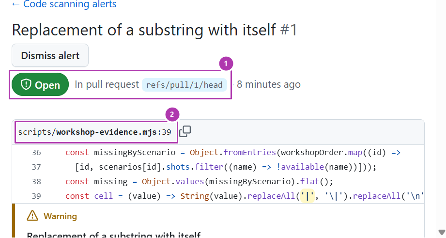
Perbesar S10-alert-open-annotated.pngSumber GitHub · 1. Baca Open dan ref PR: berbeda dari branch utama yang memiliki 0 open alert. · 2. Buka lokasi script. CodeQL melihat karakter pipa diganti dengan dirinya sendiri, sehingga pemisah sel Markdown belum di-escape. Tidak ada celah yang ditanam. Uji perbaikan biasa sebelum memindai lagi
Draft #36 memperbaiki formatter dan menambah satu regresi. Tes fokus lulus. Saya juga memeriksa baris laporan yang benar-benar dihasilkan: CI | e2e tetap satu sel meski input awal berisi newline. Jalur ini berbeda dari Copilot Autofix.
npm test -- workshop-evidence.test.js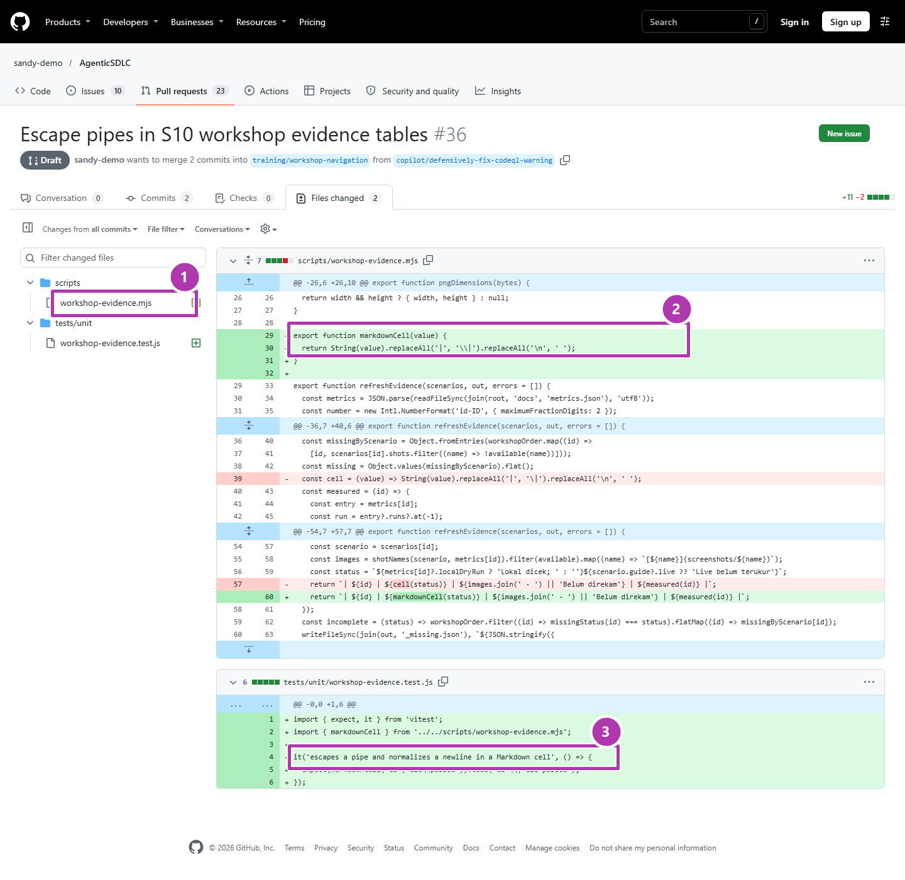
Perbesar S10-remediation-diff-annotated.pngSumber GitHub · 1. Pastikan hanya formatter dan unit test. · 2. Baca escape pipa yang menambahkan backslash untuk tabel Markdown. · 3. Tes input dengan pipa dan newline menjaga satu sel. Ini draft perbaikan biasa, bukan PR dari tombol Autofix. Jalankan scan ulang pada ref yang sama
CodeQL memindai commit 7b44711 pada refs/pull/1/head setelah perbaikan biasa. Dua analisis selesai; masing-masing hasil scan mencatat nol temuan. Jangan membandingkan dengan ref demo/workshop yang memang sudah nol alert.
https://github.com/sandy-demo/AgenticSDLC/actions/runs/45707777663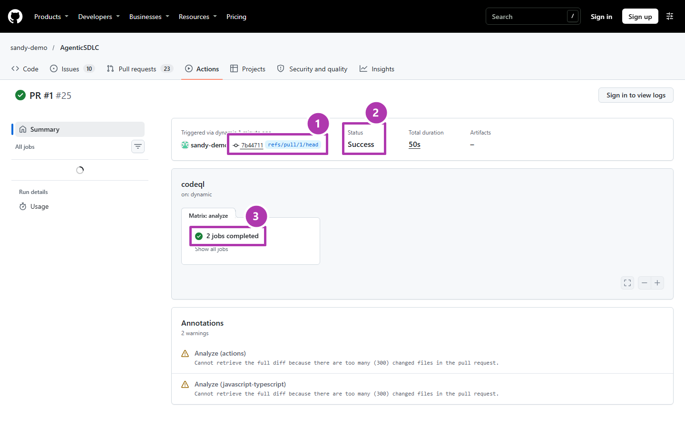
Perbesar S10-after-annotated.pngSumber GitHub · 1. Cocokkan hash 7b44711 dan refs/pull/1/head. · 2. Baca Success untuk pemindaian sesudah perbaikan kode. · 3. Kedua analisis selesai. Hitung open alert terpisah di Code scanning; bukan hasil Autofix. Baca Fixed in branch, bukan status global
Buka Activity alert #1 dan cari Fixed in branch refs/pull/1/head pada commit 7b44711. API untuk ref yang sama mengukur 1 open sebelum perbaikan dan 0 setelah scan. Tidak ada tombol Dismiss yang digunakan.
https://github.com/sandy-demo/AgenticSDLC/security/code-scanning/1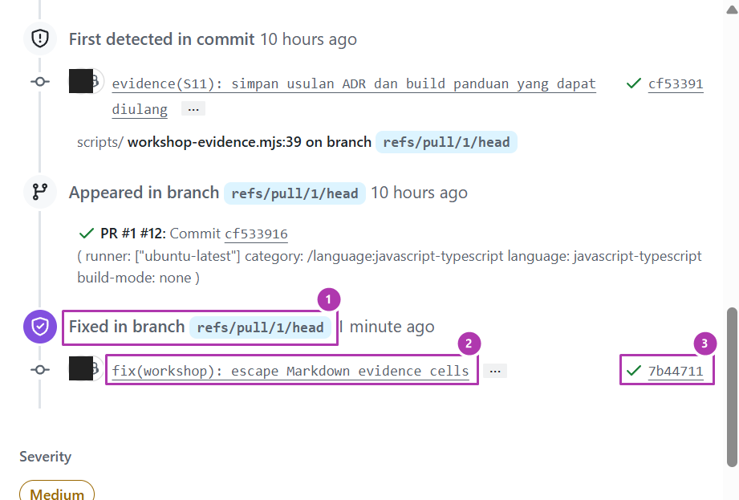
Perbesar S10-03-alert-closed-annotated.pngSumber GitHub · 1. Baca Fixed in branch pada ref PR yang sama. Header tanpa filter dapat tetap Open; gunakan aktivitas ref ini dan API ref-specific. · 2. Cocokkan perubahan escape Markdown. · 3. Periksa commit 7b44711. Tidak ada dismiss manual atau merge.


Cek hasil
C4 menunjukkan satu warning Open sebelum perubahan dan nol sesudahnya pada refs/pull/1/head. Alert #1 mencatat Fixed in branch pada commit 7b44711. Pemindaian utama berbeda ref. Tidak ada Autofix yang dibuat, alert tidak di-dismiss, dan PR tidak di-merge.
Bukti latihan terverifikasi
Langkah live
Prasyarat dan petunjuk pengambilan bukti
Perbaikan biasa dan scan sebelum/sesudah sudah terverifikasi pada PR #1. Screen Assign to Copilot/Autofix dan draft yang dibuat oleh fitur itu belum ada: tombol tidak muncul dan API HTTP 404 No suggested fix found. Jangan memperluas scope, menanam celah atau menyebut fallback sebagai Autofix.
S10-01-assign.pngDi repo latihan yang sudah punya alert sah, pilih Security and quality → Code scanning → alert Open yang layak. Foto tombol Assign to Copilot atau Autofix yang benar-benar ditampilkan sebelum mengajukan tindakan.
S10-02-pr-autofix.pngBuka draft Autofix yang ditautkan oleh alert. Periksa file mitigasi dan run CodeQL ulang pada commit PR; foto hubungan alert → draft dan hasil scan, tanpa detail serangan.
Sebelum dan sesudah
| Bagian | Sebelum | Sesudah / target |
|---|---|---|
| Perilaku | Satu warning format tabel Open pada refs/pull/1/head sebelum perbaikan. | CodeQL mencatat Fixed in branch; 0 open pada ref yang sama setelah commit 7b44711. |
| Bukti visual | Ada tangkapan GitHub. | Ada tangkapan GitHub. |
| Keputusan | Peserta membaca keadaan awal. | Manusia memeriksa hasil sebelum meneruskan. |
C4 · Alert CodeQL terbuka
| Kategori | Jumlah alert |
|---|---|
| Sebelum | 1 |
| Sesudah | 0 |
Manfaat
- AppSec memeriksa mitigasi dan bukti, bukan sekadar perubahan status.
Bukti dan sumber
Template issue S10 · Data latihan dan pengukuran.
Bukti GitHub live
CodeQL menemukan warning format tabel #1 pada PR bukti. Setelah perbaikan biasa draft #36 diuji dan diterbitkan pada bukti, CodeQL menyatakan Fixed in branch pada 7b44711. Hitungan PR 1 → 0, bukan hasil Autofix.
 Perbesar S10-codeql-initial-scan.png
Perbesar S10-codeql-initial-scan.png
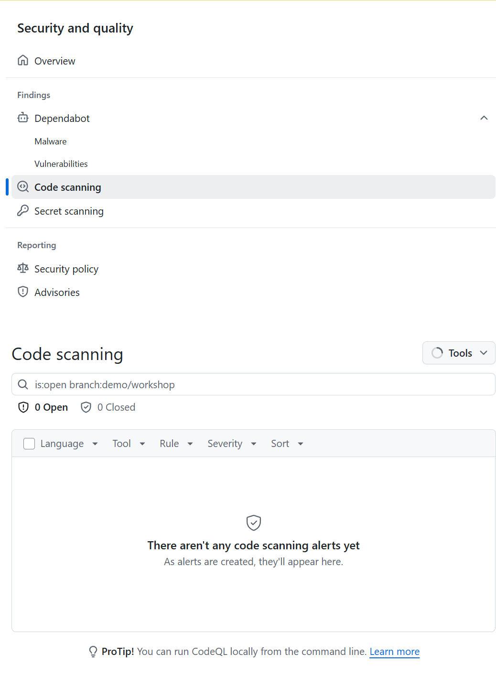
Perbesar S10-before.png
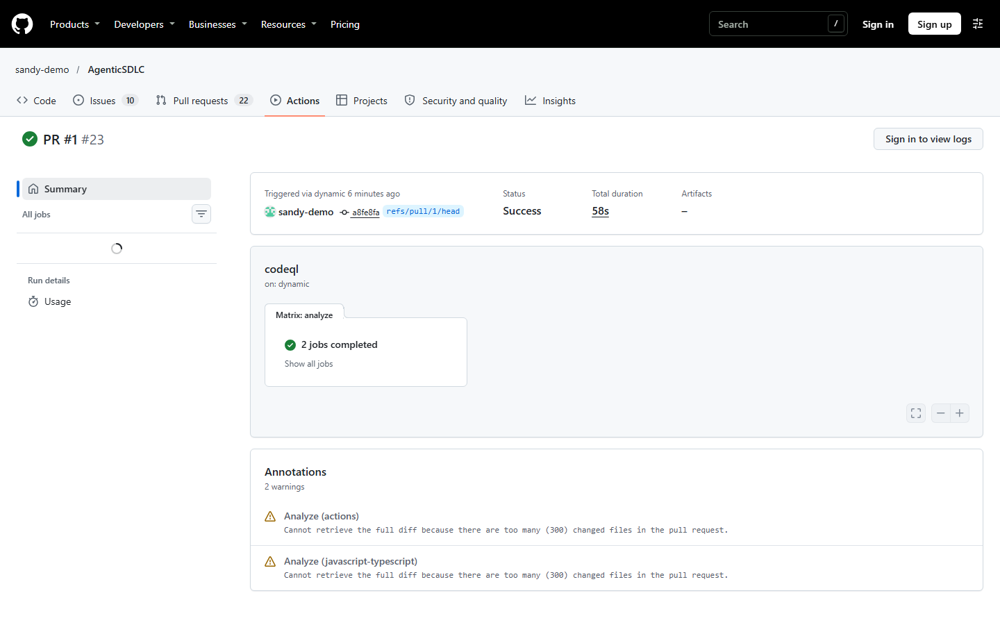
Perbesar S10-reference-draft-codeql.png
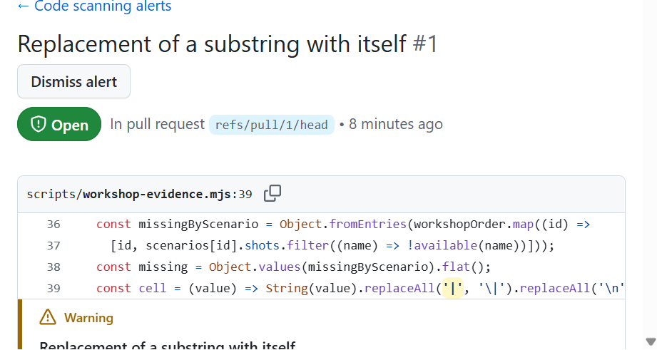
Perbesar S10-alert-open.png
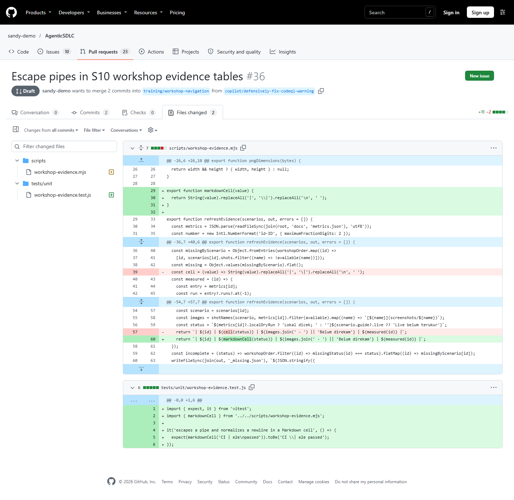
Perbesar S10-remediation-diff.png
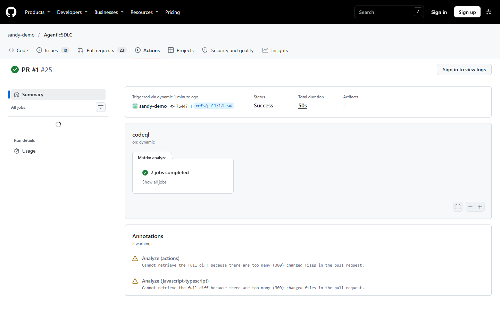
Perbesar S10-after.png
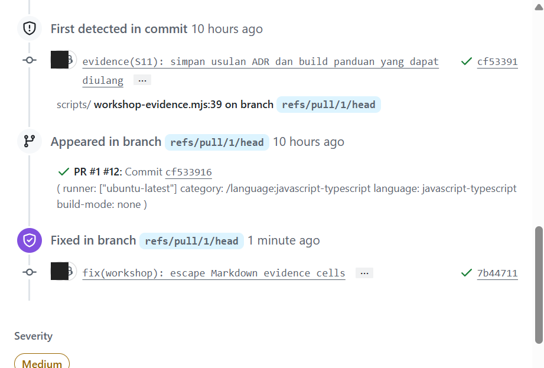
Perbesar S10-03-alert-closed.png2 layar yang belum direkam
S10-01-assign.pngS10-02-pr-autofix.png
Ulangi latihan
Pemeriksaan tidak menulis kode atau data remote. Ulangi perintah di terminal baru bila sebelumnya mengubah variabel lingkungan.
npm run reset -- --fresh